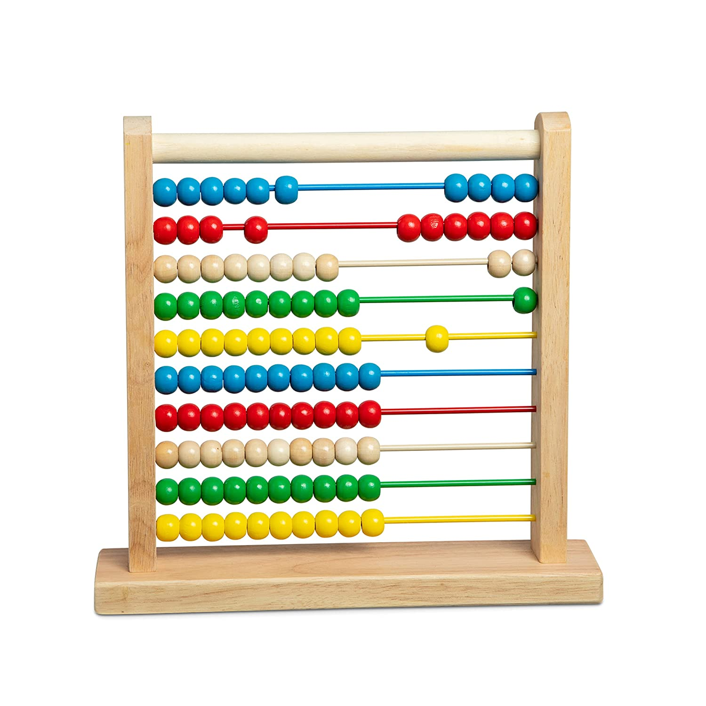
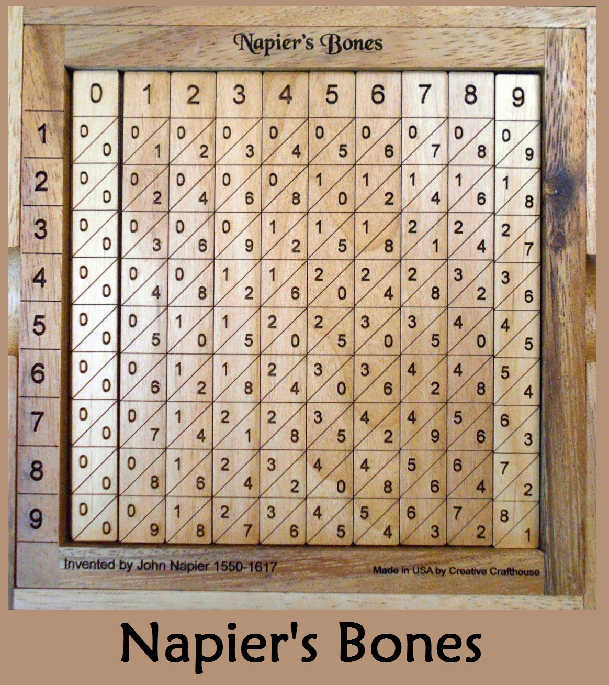
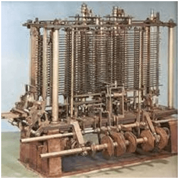

| Picture |
Description |
|  |
An abacus is a mechanical device that is used to calculate the arithmetic calculations quickly, also referred to as a counting frame. Its name was originated from the Latin word 'abax' or 'bacon.' Originally, it was invented thousands of years ago to perform arithmetic calculations, and today's is widely used in brain development programs. It comprises a rectangular frame that holds vertically organized rods on which beads move up and down. The main purpose of an abacus is to increase the brainpower of the children. |
|  |
It was a manually-operated calculating device which was invented by John Napier (1550-1617) of Merchiston. In this calculating tool, he used 9 different ivory strips or bones marked with numbers to multiply and divide. So, the tool became known as "Napier's Bones. It was also the first machine to use the decimal point. |
 |
Pascaline is also known as Arithmetic Machine or Adding Machine. It was invented between 1642 and 1644 by a French mathematician-philosopher Biaise Pascal. It is believed that it was the first mechanical and automatic calculator.
Pascal invented this machine to help his father, a tax accountant. It could only perform addition and subtraction. It was a wooden box with a series of gears and wheels. When a wheel is rotated one revolution, it rotates the neighboring wheel. A series of windows is given on the top of the wheels to read the totals. An image of this tool is shown below; |
|  |
This calculating machine was also developed by Charles Babbage in 1830. It was a mechanical computer that used punch-cards as input. It was capable of solving any mathematical problem and storing information as a permanent memory. |
| Generation Of Computer |
A generation of computers refers to the specific improvements in computer technology with time. In 1946, electronic pathways called circuits were developed to perform the counting. It replaced the gears and other mechanical parts used for counting in previous computing machines.
In each new generation, the circuits became smaller and more advanced than the previous generation circuits. The miniaturization helped increase the speed, memory and power of computers. There are five generations of computers which are described below;
|